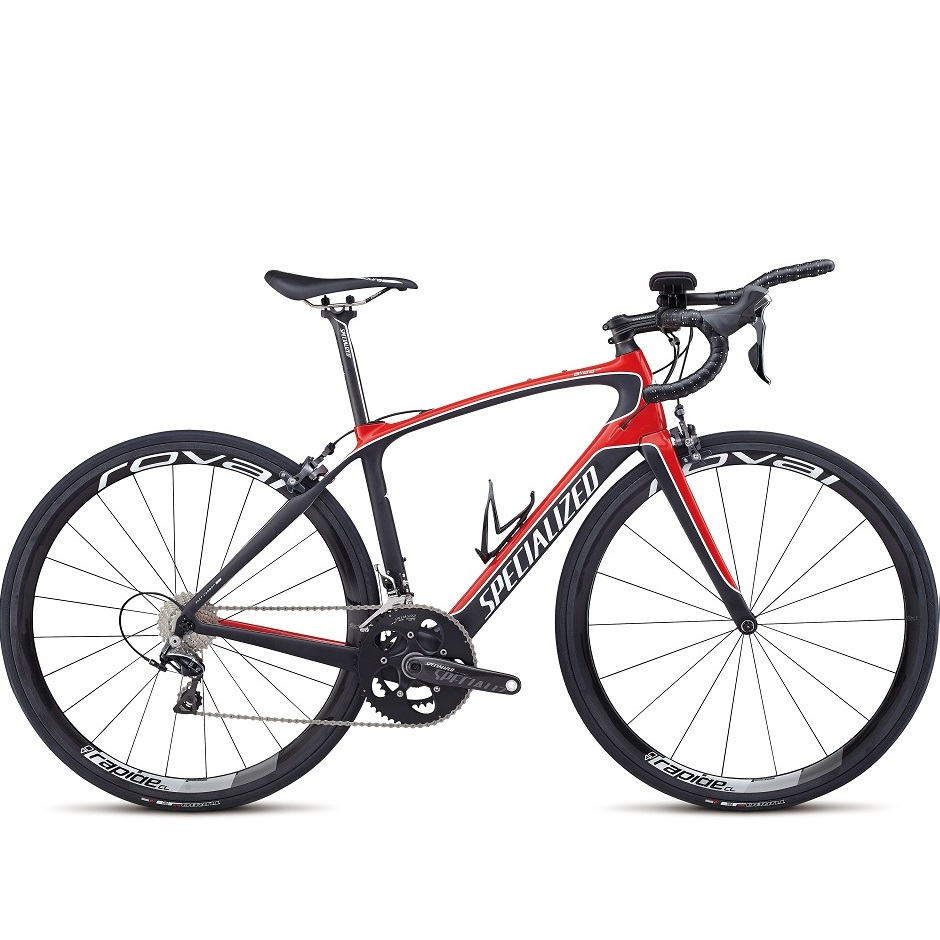

The 2015 Specialized Alias Pro Women’s Road Bike is one bike with multiple identities: an aero road bike and a triathlon bike. Leading up to the event, it’ll be your hardworking training partner, comfortable on the climbs and while putting in mile-after-mile on the road. Come the tri itself, that’s when you’ll see the race side of Alias, the full-carbon beast combines tri-specific geometry with aerodynamic tube shaping, a zero-offset seatpost, and a set of aerobars. The Alias is for the woman who hammers out a triathlon before her kids’ games on the weekends, who values the title triathlete equally with Mom, Teacher, or Lawyer.
Specialized 2015 Women's Alias Pro Tri Road Bike
$5,729.99

| Frame | Specialized FACT 10r carbon, FACT TM construction, Women's Alias Geometry and layup, OSBB |
|---|---|
| Fork | Specialized Alias, FACT carbon full monocoque, 1-1/8" steerer |
| Shifters | Shimano Dura-Ace STI, 11-speed |
| Front Derailleur | Shimano Dura-Ace, braze-on, 11-speed |
| Rear Derailleur | Shimano Dura-Ace, 11-speed |
| Brakes | Shimano Ultegra |
| Brake Levers | Shimano Dura-Ace |
| Cranks | Specialized Pro FACT carbon, OSBB - 52/36 |
| Cassette | Shimano Dura Ace, 11-speed, 11-28 |
| Bottom Bracket | OS integrated, sealed bearings |
| Chain | Shimano Ultegra, 11-speed |
| Wheels | Roval Rapide CL 40 |
| Tires | Specialized Turbo Pro, 127TPI, foldable aramid bead, BlackBelt protection, 700x23c |
| Pedals | Nylon flat test ride, loose ball, w/ reflectors |
| Headset | 1-1/8 inch stainless steel cartridge bearings, 20mm carbon cone spacer, w/ 20mm of carbon spacers |
| Stem | Specialized Pro-Set, 7075 3D forged alloy, cone head bolt and plastic clip, 12-degree, 4-degree shim, 31.8mm clamp |
| Handlebars | Specialized Women's Expert, alloy, 123mm drop, 75mm reach |
| Grips | Specialized S-Wrap Classic, w/ gel |
| Saddle | Body Geometry Women's Oura Expert Gel, hollow Ti rails, 155mm |
| Seat Post | Specialized Pro SL, FACT carbon, 2-bolt, zero-offset, 27.2mm |
| Seat Binder | Integrated, forged alloy |